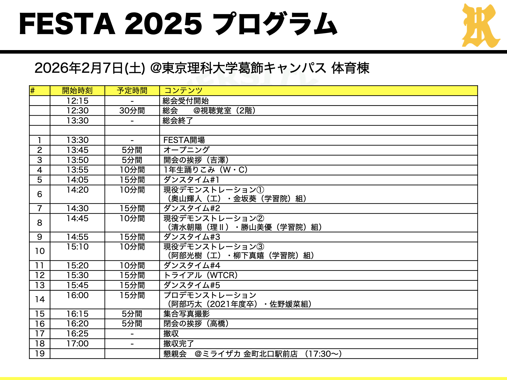
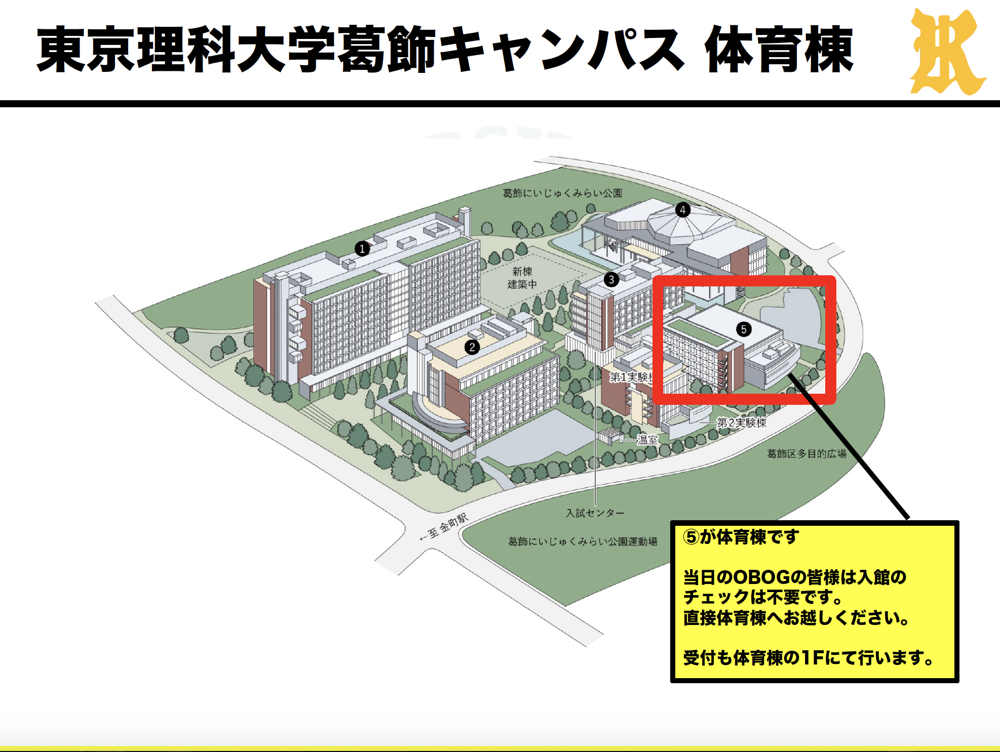
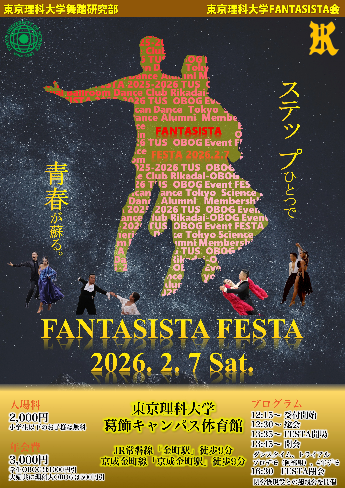

詳細案内
2026年2月6日
2025年度 FANTASISTA FESTA 開催概要（第2報）
2025年度 FANTASISTA FESTA の詳細案内を掲載しています。
FANTASISTA FESTA 2025 日 時：2026年2月7日（土） 総会 12:30〜13:30 FESTA 13:45〜16:15 懇親会 17:30〜（会場：ミライザカ金町北口駅前店）
会 場：東京理科大学 葛飾キャンパス体育館 東京都葛飾区新宿6丁目3番1号 （JR常磐線「金町駅」／京成金町線「京成金町駅」徒歩8分）
内 容：プロデモ（阿部組）、4年生デモ、1年生ダンスタイム、ダンスタイム等
参加費 ：5,000円（入場料：2,000円、年会費3,000円） 懇親会は別途参加費をいただきます（4,000円程度）。

ダンスタイムがございますので、お持ちの方はダンスシューズをご持参ください。
OBOGの皆さまも体育館の更衣室をご利用いただけます。
参加費は当日会場にていただきます。

